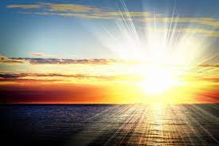
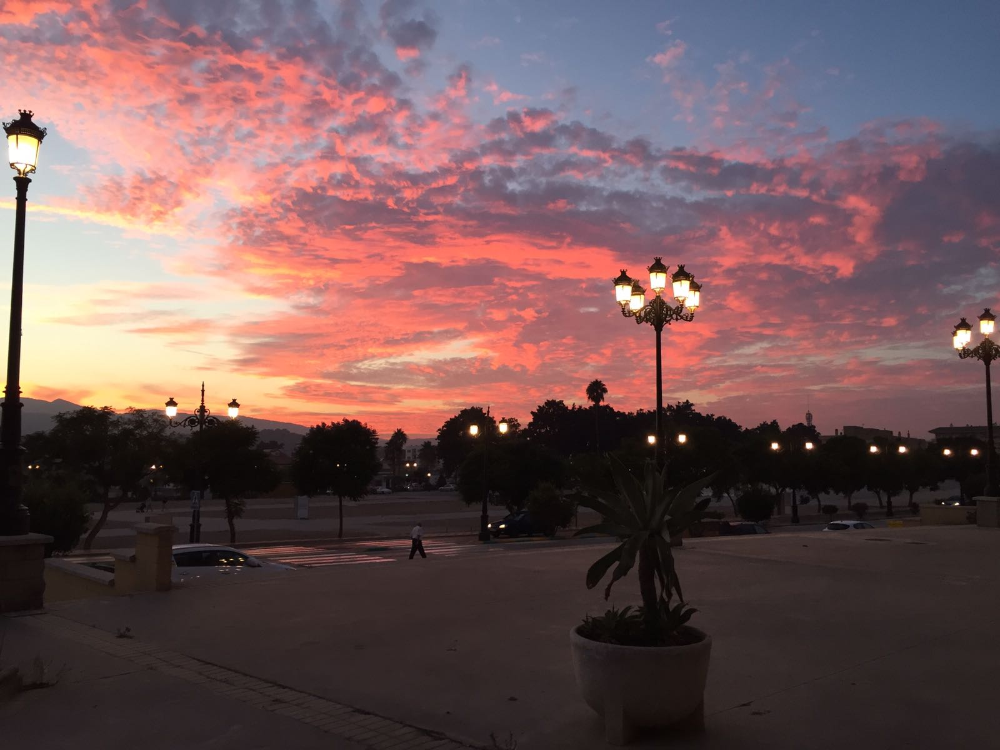
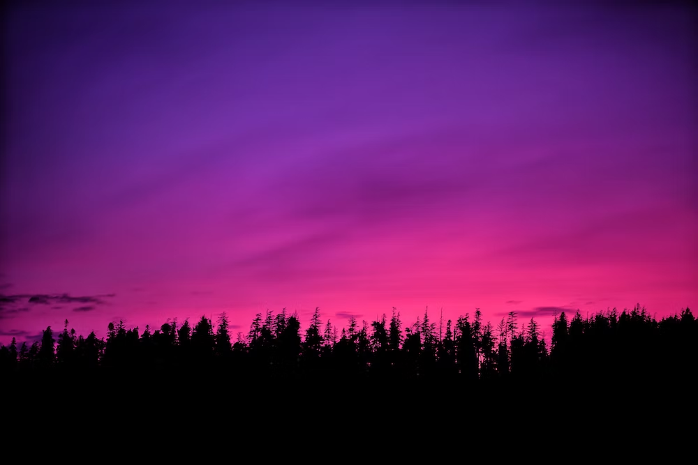
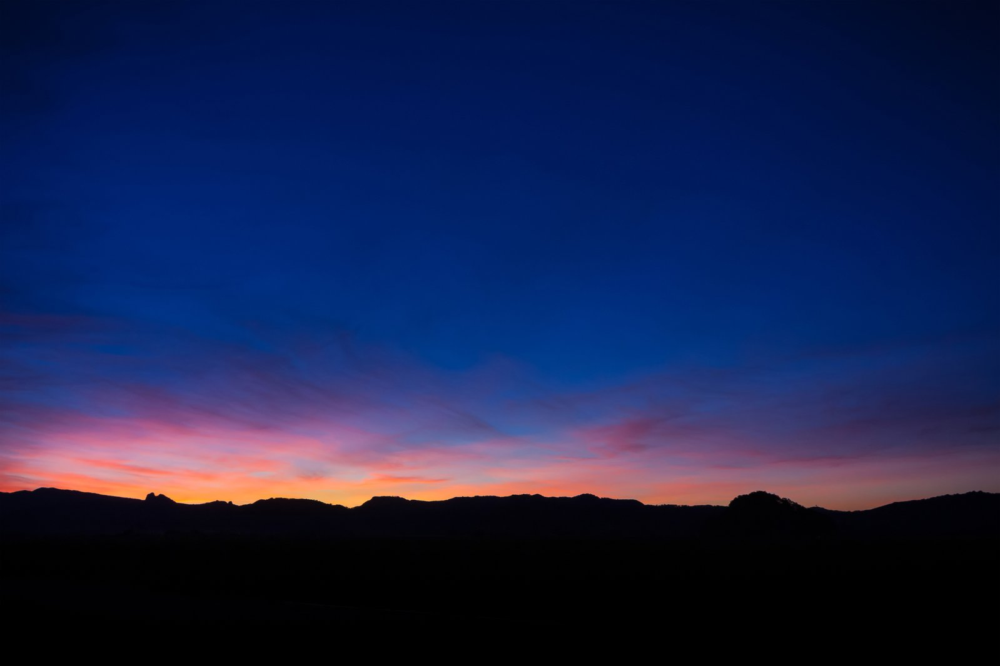
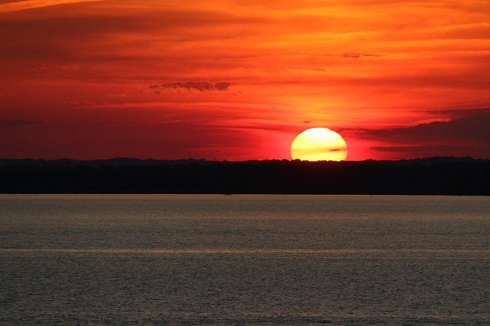
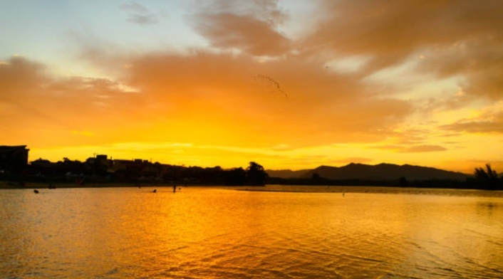
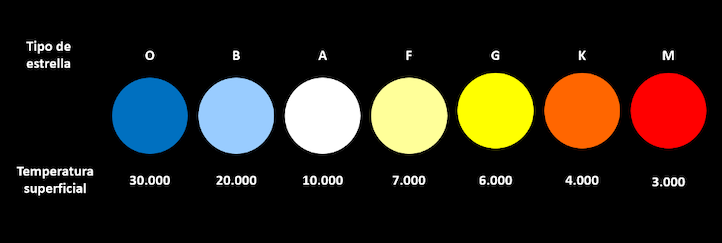

Los colores de la Luna y el Sol en el cielo
El Sol y la Luna son astros de los que depende el planeta tierra, y son todo un espectaculo por todos los fenomenos opticos que causan y los interesantes colores que generan tanto en su superficie como en el hermoso cielo de nuestro planeta, pintandolo de colores hermosos y a continuacion conoceremos como es que se generan cada uno de estos sucesos.
El Amanecer
Sin duda tanto el Amanecer como el Atardecer son fenomenos opticos hermosos, y lo mejor es que hay uno nuevo cada dia, y nunca encontararas dos iguales, por diferentes causas como la ubicacion geografica, el clima, la posicion de las nubes, la hora etc...
El Amanecer es el proceso por el cual comienza a nacer el día, a despertar la mañana, lo que ocurre cuando se asoma el Sol en el horizonte, haciéndose visible cuando su altura astronómica se torna positiva, también se lo conoce como el alba, y es el momento en que los madrugadores comienzan a realizar sus tareas cotidianas.
El atardecer
El atardecer es el paso de la luz del día a la oscuridad de la noche. El cielo se oscurece poco a poco a medida que la Tierra gira sobre sí misma y alrededor del Sol, dejando de recibir su luz hasta llegar a la oscuridad. Hay atardeceres que parecen incendios en el cielo, también conocidos como arreboles. Los colores rojos y naranjas se deben a que, en el atardecer, cuando el Sol no está vertical sobre nosotros, los rayos de luz re-corren hasta 10 veces más atmósfera, descomponiéndose en colores de los que solo alcanzamos a ver el rojo.
Como se generan cada uno de los colores del Amanecer y el Atardecer
|  Rosa-Lila |
 Azul |
 Rojo-Naranja |
 Arrebol |
|||||||||
|---|---|---|---|---|---|---|---|---|---|---|---|---|
este fenómeno es el resultado de la dispersión de la luz del sol en la atmósfera, en un momento en que el ángulo entre el sol y el horizonte es menor a un porcentaje del 10%. |
Cuando la luz del Sol pasa a través de tanto aire, las moléculas del aire dispersan y redispersan la luz azul varias veces y en muchas direcciones. |
cuando la luz del Sol recorre una trayectoria mucho más larga a través de la atmósfera, perdiendo gran parte de su componente azul y provocando que el Sol se pueda observar de color rojo. |
Es el fenómeno meteorológico por excelencia, los cielos con candilazo o también llamados arrebolados. El candilazo o arrebol, es un fenómeno luminoso producido por la refracción y reflexión de la luz solar a través de formaciones nubosas, la cual proyecta múltiples tonalidades rojizas y amarillentas cuando el Sol ilumina un atardecer (o un amanecer) nuboso. Son frecuentes en primavera, cuando las tormentas pierden fuerza, el astro rey ilumina las nubes que quedan en el cielo. Lo hace además con luz rojiza porque entonces el Sol está bajo en el horizonte y la luz tiene que atravesar un tramo mayor de la atmósfera, por lo que la dispersión hace que nos llegue de este color. |
|||||||||
Los Colores De La Luna y El Cielo Estrellado
El color no es solo una curiosidad, aporta un dato fundamental en el estudio estelar: la temperatura superficial de la estrella. Las estrellas más calientes son las azules y las más frías son las rojas (al contrario que el uso de los colores en el arte y en nuestra experiencia cotidiana). Por eso se suele decir que en casa de los astrofísicos el grifo está al revés: el azul indica caliente y el rojo, frío. A partir de los colores de las estrellas, se estable la clasificación estelar Morgan-Keenan, que va de las estrellas más azules (las más energéticas) a las rojas (las más débiles), pasando por los tipos O B A F G K M. Como regla mnemotécnica se suele usar la frase Oh Be a Fine Girl/Guy Kiss Me para recordarlas —un clásico de las bromas en las facultades de todo el mundo en las que se estudia astrofísica.

Los colores de la Luna
 La luna como tal no tiene un brillo propio, sino que su color blanco refleja la luz del sol y el aire y la atmosfera alteran el color que se puede ver reflejado en ella.
La luna rosa es un fenomeno espectacular que se da cuandoa luna llena coincide con el perigeo, es decir, el punto más cercano de la Luna a la Tierra en su órbita elíptica.
Pero, en realidad, el término "Luna rosa" no se refiere al color de nuestro satélite, sino a una de las denominaciones que se le da a la Luna llena que ocurre en abril. Este nombre proviene de la tradición de los nativos americanos y se le atribuye a la floración de una planta nativa de América del Norte llamada musgo rosa o Phlox subulata, que florece en tonos rosados durante la primavera.
La luna como tal no tiene un brillo propio, sino que su color blanco refleja la luz del sol y el aire y la atmosfera alteran el color que se puede ver reflejado en ella.
La luna rosa es un fenomeno espectacular que se da cuandoa luna llena coincide con el perigeo, es decir, el punto más cercano de la Luna a la Tierra en su órbita elíptica.
Pero, en realidad, el término "Luna rosa" no se refiere al color de nuestro satélite, sino a una de las denominaciones que se le da a la Luna llena que ocurre en abril. Este nombre proviene de la tradición de los nativos americanos y se le atribuye a la floración de una planta nativa de América del Norte llamada musgo rosa o Phlox subulata, que florece en tonos rosados durante la primavera.
 la Tierra se sitúa entre la Luna y el Sol, tapando la luz del Sol que se refleja en la Luna. Entonces, la única luz que le llega a la superficie de la Luna es la de los extremos de la atmósfera terrestre. Las moléculas de aire de la atmósfera reparten la mayor parte de la luz de color azul.
Se denomina Luna azul a la segunda luna llena ocurrida durante un mismo mes del calendario gregoriano, lo que sucede aproximadamente cada 2,5 años y originalmente, al tercer plenilunio cuando en una estación cualquiera del año se dan cuatro lunas llenas en lugar de tres.
la Tierra se sitúa entre la Luna y el Sol, tapando la luz del Sol que se refleja en la Luna. Entonces, la única luz que le llega a la superficie de la Luna es la de los extremos de la atmósfera terrestre. Las moléculas de aire de la atmósfera reparten la mayor parte de la luz de color azul.
Se denomina Luna azul a la segunda luna llena ocurrida durante un mismo mes del calendario gregoriano, lo que sucede aproximadamente cada 2,5 años y originalmente, al tercer plenilunio cuando en una estación cualquiera del año se dan cuatro lunas llenas en lugar de tres.
 Habitualmente, la Luna aparece más amarilla o anaranjada cuando está más cerca del horizonte. Esto pasa porque, en ese ángulo, la luz debe recorrer más distancia hasta nuestro ojos que cuando está en lo más alto. En ese camino, la luz azul, la verde y la violeta se dispersan por las moléculas de la atmósfera y el color que captamos con más fuerza es el rojo (a veces, suavizado en naranja o amarillo).
Habitualmente, la Luna aparece más amarilla o anaranjada cuando está más cerca del horizonte. Esto pasa porque, en ese ángulo, la luz debe recorrer más distancia hasta nuestro ojos que cuando está en lo más alto. En ese camino, la luz azul, la verde y la violeta se dispersan por las moléculas de la atmósfera y el color que captamos con más fuerza es el rojo (a veces, suavizado en naranja o amarillo).